言われた工事を、タップしていくだけ。
カチタスの現地調査で言われたリフォーム内容を選ぶと、見積の金額が自動で出ます。
① 共通② 部屋③ 外部工事④ 見積
先に読む 右上の「原価」ボタンは管理者用です。カチタスの担当者やお客様の前では押しません（くわしくは下の赤い枠）。
1アプリを開いて「内部工事」を押す
物件名は、あとから入れても大丈夫です。
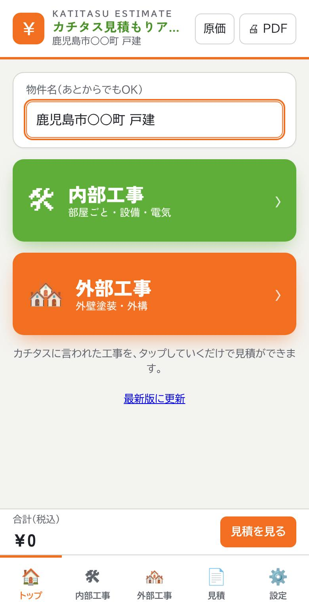
トップ画面
2まず「共通」を押す
家全体で決まるもの（クロス・床・建具・設備・電気）は、ここでまとめて選びます。
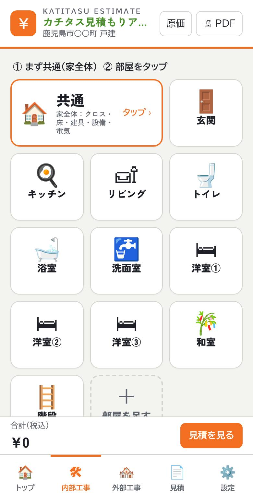
一番上のオレンジの枠が「共通」
① 間取りをタップ
居室の数などを ＋ で入れます。ざっくりの延べ床と、クロスの量が自動で出ます。
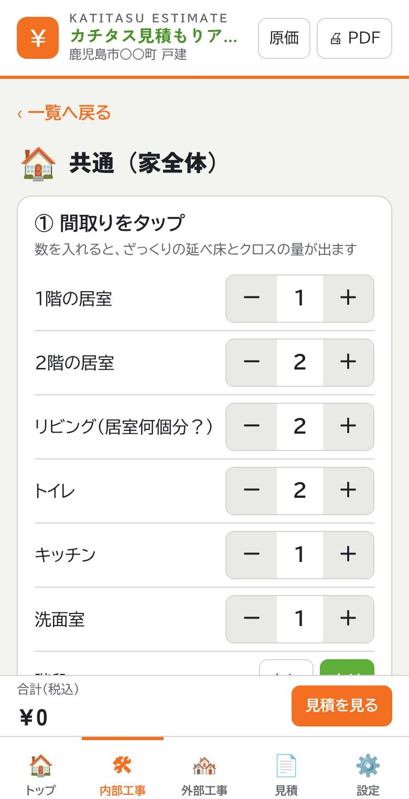
② 家全体の内装を選ぶ
クロス、床（メイン床材）、建具、巾木、廻り縁、窓枠、レベル工事。押すと緑になります。もう一度押すと外れます。
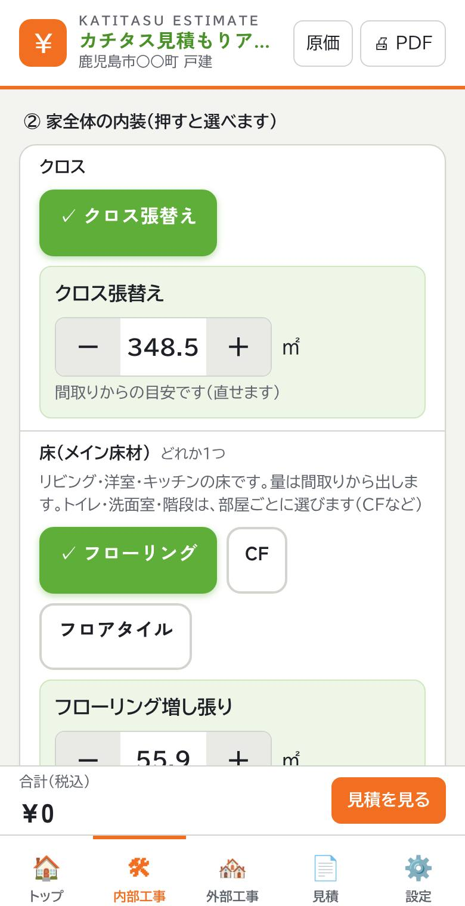
③ 設備・電気を選ぶ
まとめて頼むときは 【フル】 を押すだけ。細かく選ぶときは「個別に選ぶ」を開きます。
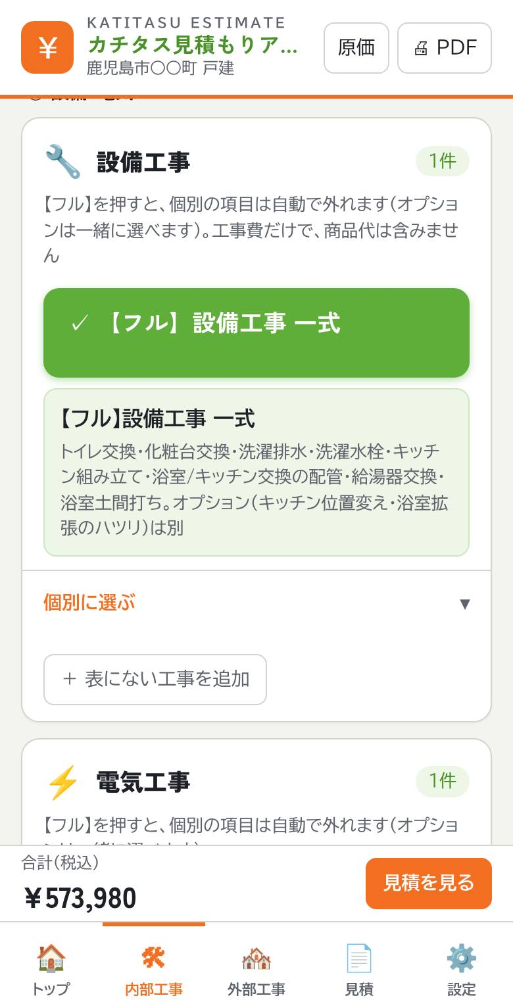
ポイント 床（メイン床材）は、リビング・洋室・キッチンの床です。トイレ・洗面室・階段の床は、それぞれの部屋で選びます。
3部屋を押して、工事を選ぶ
言われた部屋のタイルを押すと、その部屋で選べる工事が出ます。押すだけで選べます。
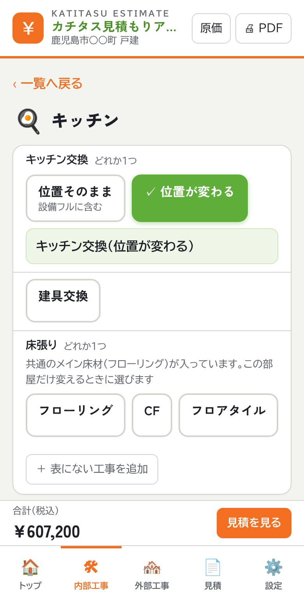
キッチンの例：交換（位置が変わる）
- 台数や枚数は − ＋ で変えます。
- 終わったら ✓ OK（一覧へ戻る）。
- 2階トイレなどは、一覧の「＋ 部屋を足す」で増やせます。
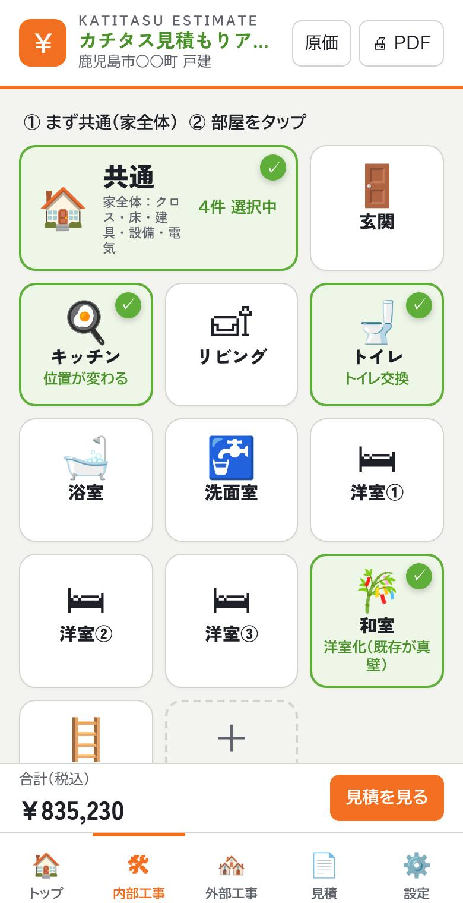
選んだ部屋は緑になり、選んだ工事の名前が出ます
4外部工事を選ぶ
下のタブの「外部工事」を押して、外壁塗装（どれか1つ）と外構を選びます。
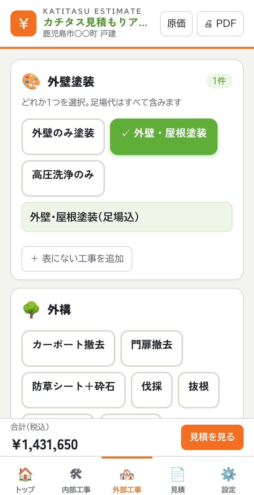
5「見積を見る」を押す
選んだ工事の金額が、工種ごと（設備・電気・大工・内装…）に自動で入ります。一番下に小計（税抜）と合計（税込）が出ます。
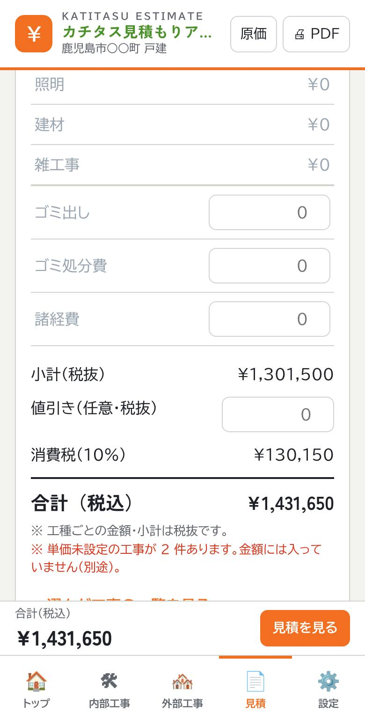
- ゴミ出し・ゴミ処分費・諸経費は、この画面で金額を入れます。
- 印刷 / PDF で見積書にできます。
- 保存する で、この携帯に残せます。
- 「選んだ工事の一覧を見る」で、内容を確認できます。
右上の「原価」ボタンについて
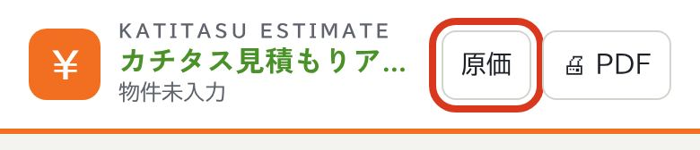
赤い枠のところが「原価」ボタン
会社の原価（仕入れ値）と粗利を見るためのボタンです。合言葉を知っている管理者だけが使います。
新人の方は、ふだん押しません。押しても合言葉が無いと何も見えません。
⚠ 必ず守ること
- カチタスの担当者・お客様の前では押さない
- 「原価ON」のまま画面を見せない
- 見終わったら、もう一度押して「原価」に戻す
- 合言葉を人に教えない・書いて残さない
押すとどうなる？
- 合言葉を聞かれます。合っていると、ボタンがオレンジの「原価ON」になります。
- 工事のボタンの下に、金額・原価・粗利率が出ます。
- 「見積」タブに、原価の合計・粗利額・粗利率が出ます。
- 「設定」タブに、原価を入れる画面（原価マスター）が出ます。
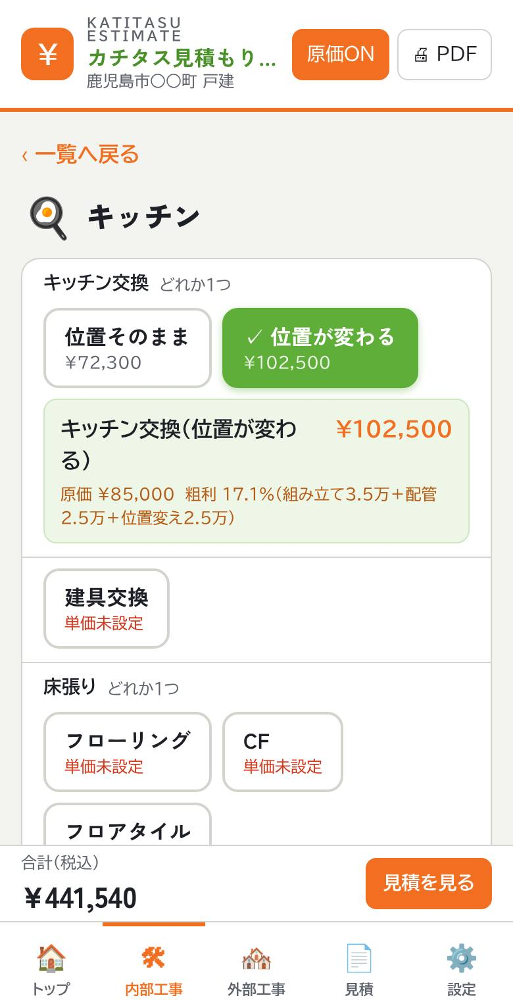
原価ONのとき：工事の下に金額・原価・粗利率が出る
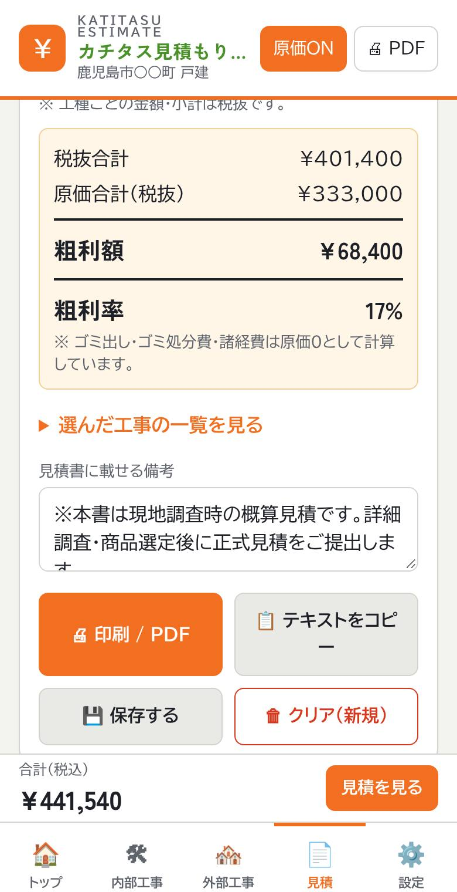
「見積」タブ：原価の合計・粗利額・粗利率
原価マスターでできること
- 原価を入れると、決めてある粗利率になるお客様向けの金額が自動で入ります。
- ここで変えた内容は、その携帯だけに残ります。ほかの人の携帯は変わりません。
- 全員のアプリに反映したいときは、飯野さんへ連絡してください。
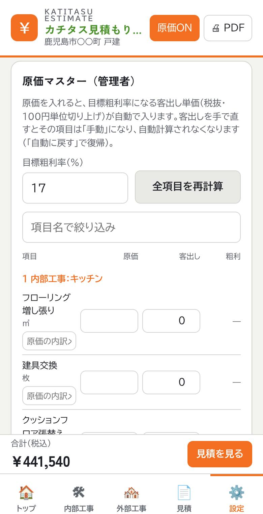
「設定」タブの原価マスター：原価と客出しを入れる
このガイドは社内用です。 原価の画面の写真が入っています。社外の人にこのページのURLを送らないでください。
工事の内容を足したい・直したいとき
飯野さんへ
- 選びたい工事がアプリに無い
- 赤い字で「単価未設定」と出る工事の金額を決めたい
- 金額・原価を変えたい
急ぐときは、その場では部屋や共通の画面の一番下にある「＋ 表にない工事を追加」で、工事名と金額を手で入れられます。
困ったとき
- 間違えて押した
- もう一度押すと外れます。部屋の画面の下にある「この部屋の選択をすべて外す」でも外せます。
- 赤い字で「単価未設定」と出る
- その工事はまだ金額が決まっていません。合計には入りません。見積を出す前に、飯野さんへ確認してください。
- 次の物件を始めたい
- 「見積」タブの クリア（新規） を押します。残したい見積は、先に 保存する を押してください。
- 入力した内容は消えない？
- 入力は、その携帯に自動で残ります。ほかの人の携帯には出ません。
- 画面が古い気がする
- トップ画面の一番下にある「最新版に更新」を押してください。
- 選びたい工事がアプリに無い
- その場では「＋ 表にない工事を追加」で手入力できます。アプリに足してほしいときは、飯野さんへ。